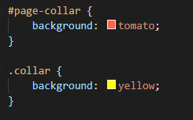
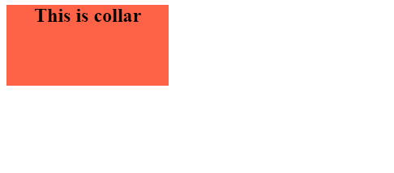
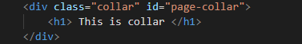
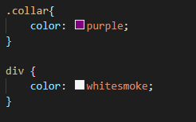
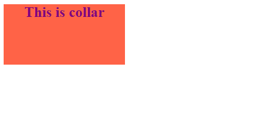

CSS specificity
CSS specificity คือ การเลือกทำสิ่งที่มีลำดับความสำคัญมากกว่าเมื่อมี selector ที่ซ้ำกัน โดยจะเลือกทำอันที่มีความสำคัญมากที่สุด ยกตัวอย่างเช่น
1. Class vs Id
HTML :

CSS :
Result :
จะเห็นได้ว่าพื้นหลังของ collar เป็นสี tomato ถึงแม้ว่า selector .collar จะอยู่ในลำดับสุดท้าย แต่ selector ก็ apply background ที่เป็นสี tomato นั่นคือ selector ที่มี id จะมีลำดับความสำคัญมากกว่า class นั่นเอง
2. Tag vs Class
HTML :
CSS :
Result :
จากตัวอย่างที่ 2 จะเห็นได้ว่าสีตัวอักษร เป็นสี purple ถึงแม้ว่า selector div จะอยู่ในลำดับสุดท้าย แต่ selector ก็เลือกที่จะใช้สี purple ดังนั้นจะสรุปได้ว่า selector ที่มี class จะมีลำดับความสำคัญมากกว่า tag ปกติ
สรุป
จากทั้ง 2 ตัวอย่างสามารถจัดลำดับความสำคัญได้ดังนี้ โดยเรียงจากมากไปน้อย
- id
- class
- tag